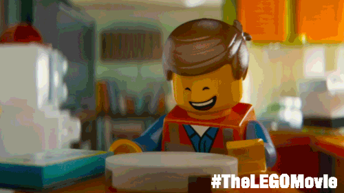
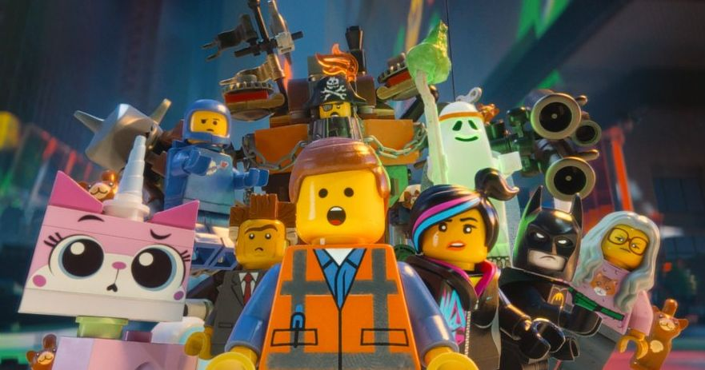
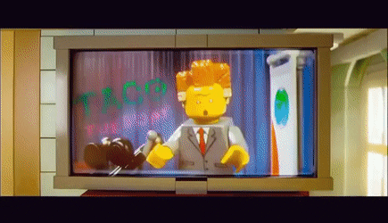
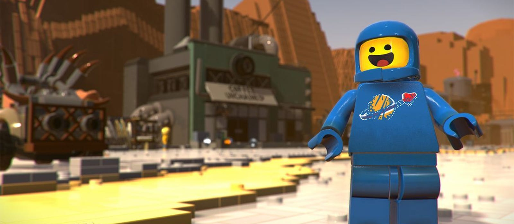
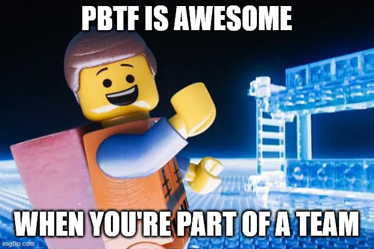
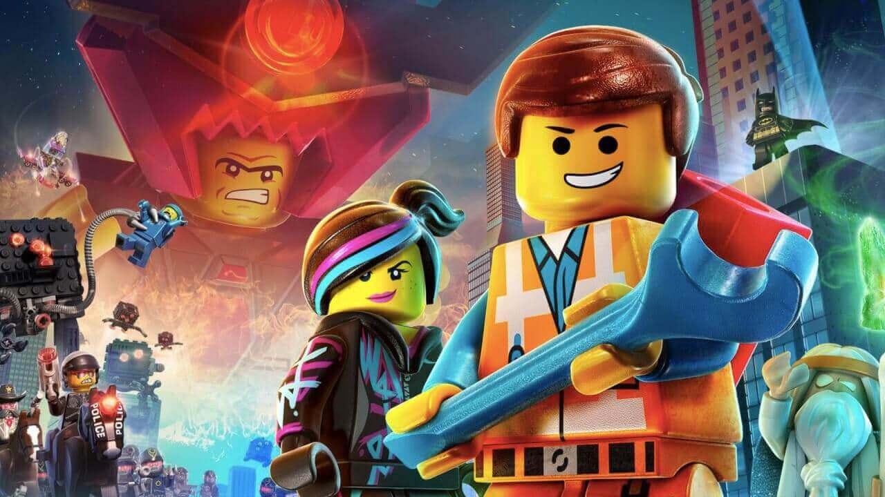

super funny and cool dancing they do in the Movie
here you can see the mane character making breakfast for breakfast
Hiden refrences in the legging Movie
this first hidden reference is a reference to wizards.
wizrds s are magical people that can use magic and preform magic on things or people. sometimes they help the hero in a movie like this wizerd does in the lego movie
there is also a hidden easter egg in the background ITS BOATMAN
another hidden refernce found only a few times in the movie is a reference to tacos
Tacos are a poplar mexican dish served as a side item for pizza or sometimes with cereal
this is hinted at in the movie when they speak about tacos
one other hiddne refernce is the movie in when they say space.
its really funny because this lego guy really likes space. you could even say he was a spaceman.
!! LITTLE KNOWN FACT ALERT !!
in the movie they say PBTF is awsome. this is a refernce to this image where the main character says pbtf is asome
if you like our contetnt and would like to support what we do consider buying one of our limited editiont emit plushies
on sale noe for onlyu 199.99 plus shipting and handing
in the film emememt (the mane charater) usess a rench
this is a refernce to construction workers who use wrenchs to built houses
